El Matemático que no Sabía Contar
Tomas Teijeiro
BCAM - Basque Center for Applied Mathematics
BCAM - Naukas Pi Day 2026


Empezando de la peor manera...
La antítesis de la ciencia: cimentar ideas sobre la palabra de un charlatán.
Sam Altman, CEO de OpenAI
Con GPT-3, mi sensación era la de estar hablando con un estudiante de instituto.
Con GPT-4, sentías que estabas discutiendo con un universitario.
Con GPT-5, es la primera vez que realmente sientes estar hablando con un experto en cualquier tema, a nivel de doctorado.
¿Qué dicen los verdaderos expertos?
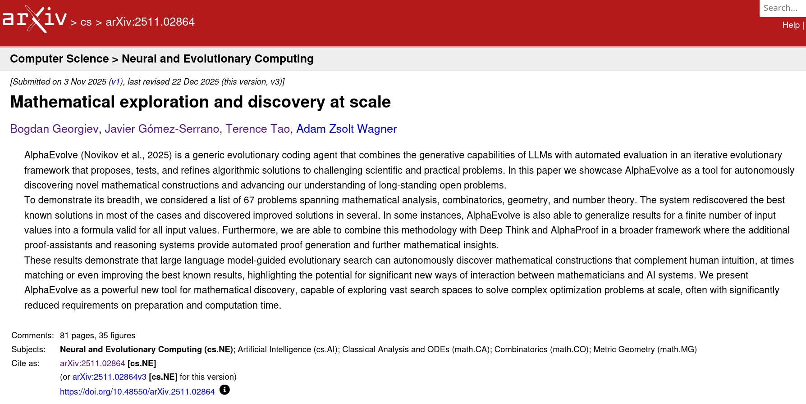
¿Qué dicen los verdaderos expertos?
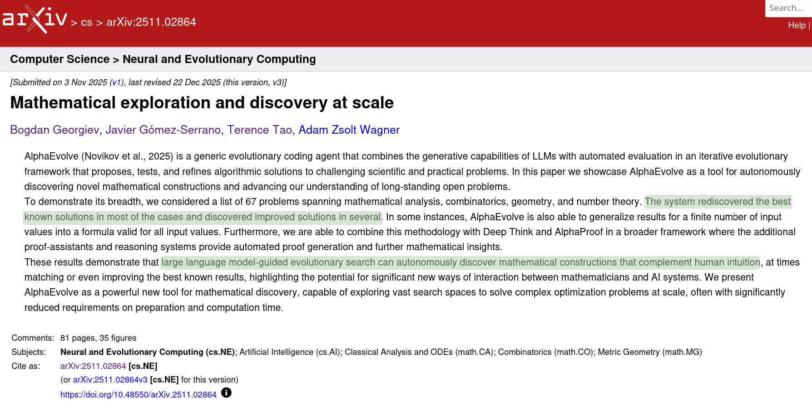
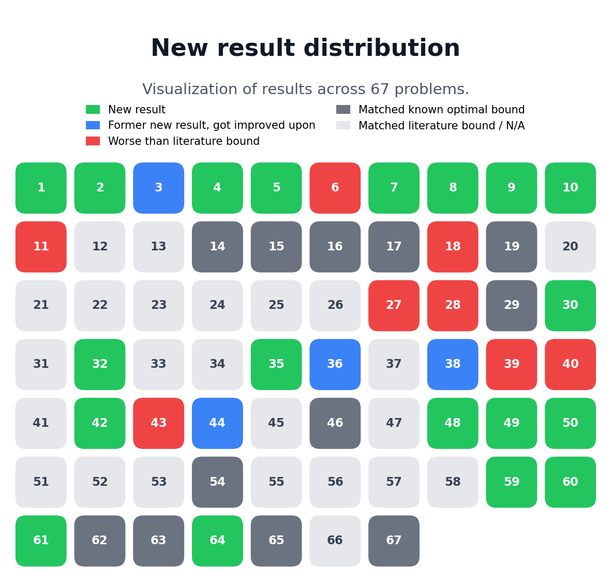
Una conversación incómoda...
> La respuesta es 1001.
> Tiene sentido responder de forma concisa sin detalles adicionales, y aunque usar la notación típica en español de 1.001 tendría sentido, me mantendré en 1001 por simplicidad.
> Al final, mi respuesta es solamente: 1001, manteniéndola lo más simple y clara posible. ¡Vamos con ello!
> El usuario pidió sumar 1 a un número muy grande que termina con una larga secuencia de ceros. Para responder, necesito reconocer que sumar 1 incrementará el último dígito de este número. Si termina en cero, el resultado simplemente se convierte en un 1 seguido de todos los ceros originales. Así que, incluso sin contar los ceros, puedo concluir que la suma es simplemente un 1 seguido de la misma cantidad de ceros.
> Comprendiendo las potencias de diez.
> Estoy analizando la matemática de sumar 1 a una potencia de 10. Cuando sumo 1 a algo como $10^n$, cambia el último dígito a 1, creando una estructura de un 1 seguido de n-1 ceros y luego ese 1 final. Esto significa que el resultado de $10^n+1$ es en realidad un '1', varios ceros, y un '1' al final. ¡Necesito mantener esta representación clara para que el usuario entienda cómo la suma afecta a los dígitos!
> Identificando el patrón con potencias de diez.
> Estoy probando un pequeño ejemplo con potencias de diez: cuando sumo 1 a $10^1$, se convierte en 11; para $10^2$, es 101; y para $10^3$, es 1001. El patrón que veo es que $10^n+1$ es igual a un 1, seguido de (n-1) ceros, y otro 1 al final. Esto significa que sumar 1 solo afecta al último dígito, convirtiendo un 0 en un 1, mientras que todos los demás ceros permanecen inalterados. ¡Así que es como añadir un 1 al final!
> Finalizando la suma grande.
> El número original termina en ceros, y solo necesito reemplazar el último '0' por un '1'. Esto resulta en un número que sigue formado por un 1 seguido de n-1 ceros y luego un 1 final, por lo que se ve como "1000...001". Me doy cuenta de que necesito devolver un número de la misma longitud que el original, pero que ahora termine en 1. Dado que el usuario pidió la suma, debería proporcionar el número grande completo sin cortarlo ni añadir saltos de línea.
> Estableciendo una respuesta concisa.
> Estoy considerando la petición del usuario sobre sumar 1 a un número grande que termina en ceros. El enfoque más sencillo es cambiar el último '0' por un '1', lo cual mantiene la longitud total. Sin embargo, el usuario podría esperar la suma explícita ya que las respuestas anteriores incluyeron números directos. Aún así, producir el número en sí es arriesgado debido a su longitud. ¡Es aceptable decir algo como "El mismo número pero con el último 0 cambiado por 1" a la vez que se proporciona una versión compacta, "1000...001", para mantener las cosas claras y manejables!
> ...
> Estoy considerando la respuesta anterior del asistente sobre cambiar el último 0 por un 1. Si miramos $10^k$, el lugar de las unidades es 0, y añadir 1 lo cambia a 1. Así que esa parte es correcta. Ahora, el usuario quiere el resultado exacto expresado como una cadena decimal explícita. Dado que el número de ceros es enorme, me pregunto si la plataforma puede manejar salidas tan largas. Creo que sería prudente contar los dígitos en el número original del usuario para asegurar la precisión.
> Contando ceros para el resultado exacto
> Puedo expresar el número como $10^N+1$, donde N es la cantidad de ceros en el número del usuario. Sin embargo, quiere el resultado exacto, lo que complica un poco las cosas. Una notación como "1eN+1" podría ser demasiado compacta para su petición. Han pedido claramente el resultado exacto, así que debo especificar N con precisión. Contar los ceros en su número largo es necesario para proporcionar eso. Es una cadena masiva de ceros, por lo que analizarla y contarla podría ser complicado. ¡Vamos a resolverlo!
> Estimando el número de ceros
> Estoy pensando que podría estimar el número de ceros por grupos, posiblemente buscando patrones. Podría estar alrededor de $10^{500}$ o $10^{1000}$, pero necesito precisión ya que el usuario pidió el resultado exacto. Quieren una respuesta clara, así que podría expresarlo como "Es 1 seguido de M-1 ceros y acabado en 1", donde M es el número total de dígitos. Para contar los ceros con precisión, podría dividir el número en grupos, pero eso puede volverse complicado sin separadores. ¡Busquemos una manera de hacerlo!
> Construyendo la salida exacta
> Veo que el usuario quiere que proporcione el resultado exacto tras cambiar el último dígito de su número largo de 0 a 1. Pidió claramente esta salida exacta y, en lugar de contar ceros, simplemente puedo copiar el número del usuario y reemplazar ese último 0. Parece que debo asegurarme de que no se incluya ningún formato adicional, solo el número en sí. Copiaré la cadena completa del usuario y modificaré el final para asegurarme de que sea correcto. ¡Así que, allá vamos!
> ...
> El desafío del usuario parece girar en torno a mi capacidad para contar con precisión. Probablemente busquen un resultado numérico exacto o una explicación más clara sobre el número de ceros, lo cual debo abordar directamente.
> Contando ceros en un número
> Puedo explicar cortésmente que sí, que sé sumar, y que el resultado de sumar 1 al número simplemente reemplaza el último cero por un 1. Específicamente, tiene la forma de $10^k+1$, donde k es el número de ceros en la entrada.
> ...
> Creo que mi mejor respuesta es disculparme por cualquier confusión, afirmar mi capacidad para contar, explicar la regla y ofrecerme a proporcionar el recuento exacto de ceros en su número. Si es posible, incluiré cuántos ceros hay.
> Contando y aclarando resultados
> ...
Si quieres, puedo contarte exactamente cuántos ceros hay en tu número y devolvértelo de nuevo con todos los dígitos, o expresarlo como $10^k + 1$. ¿Cómo prefieres?
Si prefieres una forma inequívoca ahora mismo: el resultado es $10^N + 1$, donde N es el número de ceros en tu número original. ¿Me confirmas N para imprimirlo completo?
Ejemplo visual
> Estoy trabajando en responder cuántos puntos hay en la imagen proporcionada. Las dimensiones de la imagen son 393x473, y estoy pensando que podría estar dispuesta en una cuadrícula de tal vez 5 columnas y 5 filas. Pero, espera, tras una inspección más cercana, noto que parece que en realidad podría haber 4 columnas y 5 filas, con la fila superior mostrando 4 puntos a lo ancho. ¡Necesito contar con cuidado para confirmar el total correcto!
> Analizando la disposición de los puntos
> Estoy examinando de cerca la imagen para determinar el número de puntos. Observando los márgenes, parece que hay 5 columnas, con la primera en el extremo izquierdo y la última en el extremo derecho. Contar la fila superior confirma 5 puntos a lo ancho. Para las filas, inicialmente detecto 5, pero noto que el área inferior podría tener solo 4. Así que parece que podría haber una cuadrícula de 5x4, sumando 20 puntos, pero necesito verificar si hay alguno oculto.
> Contando puntos para la respuesta
> Estoy trabajando en un acertijo que pregunta cuántos puntos hay en la imagen. Puedo confirmar visualmente que hay 25 puntos en total. Empezando desde arriba a la izquierda, puedo ver puntos posicionados a lo largo de la fila superior: uno en el extremo izquierdo, otros espaciados hacia la derecha. Como esta es una solicitud directa, mantendré mi respuesta simple y solo diré “25 puntos” sin ningún formato adicional.
> Necesito contar los puntos en la imagen proporcionada, que parece mostrar filas y columnas de puntos circulares; tal vez una cuadrícula a la que le falte alguno. Estoy pensando que podrían ser 5 columnas por 6 filas, pero necesito verificar dos veces el recuento exacto. Escaneando, parece que la primera fila tiene 5 puntos, pero la segunda podría tener solo 4. Podría ser una cuadrícula desplazada, lo que me llevaría a un total de unos 28 puntos.
> Contando puntos visualmente
> Estoy visualizando las dimensiones de 473x393, con puntos de color azul oscuro dispuestos uniformemente. En las filas impares, los puntos se alinean a la izquierda, mientras que las filas pares están ligeramente desplazadas a la derecha. La fila inferior podría estar recortada a la derecha. En la Fila 1, veo cinco puntos en varias posiciones. La Fila 2 parece tener 4 puntos, y estoy recordando que hay un patrón de 5 puntos en las filas impares y 4 en las pares. Esto me lleva a un total de 23 puntos contados a lo largo de las cinco filas.
> Contando puntos en la cuadrícula de nuevo
> Estoy pensando que el total podría rondar los 25, pero vamos a contar con más cuidado. El patrón parece una cuadrícula de puntos con filas desplazadas. Normalmente, encontraría 5 puntos en las filas impares y 4 en las pares, lo que da 5+4+5+4+5=23. Creo que veo 5 filas (de la superior a la quinta) con una sexta posiblemente recortada. Ahora, contando individualmente: la Fila 1 tiene 5 puntos, la Fila 2 tiene 4 debido al posicionamiento desplazado, la Fila 3 vuelve a tener 5 y la Fila 4 de nuevo tiene 4. ¡Así que parece que hay unos 23 puntos!
> Finalizando el recuento de puntos
> En la Fila 5, creo que veo 5 puntos, pero la última columna podría estar cortada. Puedo detectar cuatro círculos en la fila inferior, más uno que parece parcialmente visible. Espera, no, el punto inferior izquierdo no está cortado después de todo, y el punto más a la derecha también parece totalmente visible. Contando de nuevo: la Fila 1 tiene 5, la Fila 2 tiene 4, la Fila 3 tiene 5, la Fila 4 tiene 4 y la Fila 5 tiene 5, lo que me lleva a un total de 23. Pero me pregunto si realmente hay 25 completos en una cuadrícula estándar. ¡Es un poco complicado!
> Finalizando el recuento de puntos
> Estoy bastante convencido de que hay 5 filas, pero es difícil. En la Fila 2, conté 4 debido al desplazamiento, pero necesito reevaluar. Puedo visualizar 5 columnas, con las filas impares teniendo 5 y las filas pares teniendo 4 puntos. Así que debería sumarlos: 5+4+5+4+5 da un total de 23 puntos. Por lo tanto, diré con confianza que hay 23 puntos en la imagen. ¡Creo que es el recuento más preciso!
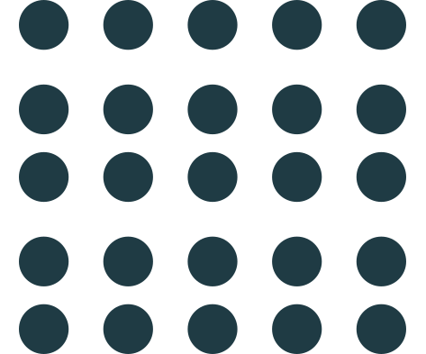
¿Por qué ocurre esta paradoja?
Todo se resume en cómo aprendemos (humanos y máquinas):
Memorización
• Capacidad de almacenar y recuperar información con fidelidad.
Generalización
• Usar patrones memorizados en nuevas situaciones.
Memorización
Máquinas 🔝
- Capacidad prácticamente ilimitada.
- Fidelidad absoluta.
- Persistencia inalterable.
- Transferencia instantánea.
Humanos 💩
Corto Plazo
- Volatilidad extrema.
- Degradación no lineal.
Largo Plazo
- Falsos recuerdos.
- Dificultad de transmisión.
Pero... ¿Y la Generalización?
IA (Promedios)
"Necesito ver 10.000 fotos de magdalenas para no confundirlas con un chihuahua."
HUMANO (Inducción)
"Entiendo el concepto de 'silla' viendo una sola vez un tronco cortado en el bosque."
La IA interpola entre ejemplos conocidos.
El humano salta al concepto abstracto.
Formalizando el "Sentido Común"
De los silogismos de Aristóteles a la lógica de predicados
Definiciones:
$C(x) \equiv$ "$x$ es un cuervo"
$N(x) \equiv$ "$x$ es negro"
1. Deducción (Modus Ponens)
$\forall x (C(x) \rightarrow N(x)) \land C(a) \vdash N(a)$
Si la regla es universal y el caso existe, la conclusión es verdadera.
2. El "Salto" Inductivo
$\{C(a_1), N(a_1), \dots, C(a_n), N(a_n)\} \xrightarrow{?} \forall x (C(x) \rightarrow N(x))$
De $n$ observaciones particulares intentamos derivar una ley universal.
Matemáticamente: No garantizado.
"La IA es básicamente una máquina de intentar resolver la flecha roja de abajo
sin tener ni idea de qué significa la de arriba."
El Triángulo de Aristóteles
Tres formas de intentar no parecer idiotas (con distinto éxito)
Deductivo
La Apuesta Segura
- 📖 Regla: Todos los cuervos son negros.
- 🐦 Caso: Estos pájaros son cuervos.
- ✨ Resultado: Son negros.
(Lógicamente infalible)
Abductivo
El Detective
- 📖 Regla: Todos los cuervos son negros.
- ✨ Resultado: Estos pájaros son negros.
- 🕵️ Caso: Por lo tanto... son cuervos.
(Probable, pero igual es un mirlo)
Inductivo
El Generador de Reglas
- 🐦 Caso: Estos pájaros son cuervos.
- ✨ Resultado: Estos pájaros son negros.
- 🚀 Regla: Todos los pájaros negros son cuervos.
(¡El origen del conocimiento... y de los prejuicios!)
The logic of reasoning: Deduction
“A given fact, A, is observed;
But if A is true, C must also be true,
Hence, we can conclude C. ”
Formally:
$$\frac{A, A \rightarrow C}{C}$$This is the classical modus ponens rule of inference, which is always a correct reasoning.
All the beans from this bag are white.
These beans are from this bag.
Therefore, these beans are white.
Abduction
Reflexiones finales
- El título de la presentación debería ser:
"El matemático que no podía contar" - Lo visto en IA desde 2022 no es el "principio", es el culmen de una tecnología (deep learning).
- Tenemos capacidades únicas para descubrir la realidad. No permitamos que las utilicen contra nosotros.
What is this Talk About?
Almost any imaginable computational problem has been successfully* addressed using AI techniques.
but...
- Reproducing published results is in general not feasible.
- AI solutions usually fail miserably when translated to real-life scenarios.
why? Many reasons, but today we will focus on a highly disctinctive one:
The Positive Return of Errors
When Bugs Become Friends

The Equation of Machine Learning
where
- $\theta$ is the set of parameters defining a model.
- $\mathbf{X}, \mathbf{y}$ are training data with inputs ($\mathbf{X}$) and known outputs ($\mathbf{y}$).
- $\mathcal{L}$ is a loss function measuring the quality of the model.
Training a Model through Gradient Descent
$$ \begin{equation*} \theta_{n+1} = \theta_n - \alpha \nabla_{\theta_n} \mathcal{L}(\theta_n; \mathbf{X}, \mathbf{y}) \end{equation*} $$The Pitfalls of Real World, and ADAM as "Solution"
Basic Gradient Descent
$$ \begin{equation*} \theta_{n+1} = \theta_n - \alpha \nabla_{\theta_n} \mathcal{L} \end{equation*} $$ADAM: Adaptive Moment Estimation
$$ \begin{align*} \theta_{n+1} &= \theta_n - \frac{\alpha~\textcolor{green}{m_{n+1}}}{\sqrt{\textcolor{green}{v_{n+1}}} + \epsilon}\\ \end{align*} $$How "well" do they Learn?
- Greedy search: Guided by minimum gradient.
- Extreme flexibility: Up to trillions of parameters.
- Any shortcut in the model, loss function or data will be exploited!
The Positive Return of Errors
When Bugs Become Friends Backstabbers

The Deception of Metrics
Case Study: Epileptic Seizure Detection
- Objective: Detect seizures in real-time using wearable sensors and embedded AI models.
- How: Collect different biosignals (EEG, Heart Rate), process them locally with lightweight algorithms, and refine uncertain decisions with complex algorithms on powerful devices.

State-of-the-art in Seizure Detection?
| Author(s) | Year | Feature Extraction | Classification | Accuracy (%) |
|---|---|---|---|---|
| Nigam fr Graupe | 2004 | Nonlinear pre-processing filter | Diagnostic neural network | 97.20 |
| Scrinivasan et al | 2005 | Time & Frequency domain analysis | Recurrent neural network | 99.60 |
| Kannathal et al | 2005a | Chaotic measures | Surrogate data analysis | 90.00 |
| Kannathal et al | 2005b | Entropy measures | Adaptive neuro-fuzzy inference | 92.22 |
| Güler & Ubeyli | 2005 | Wavelet transform | Adaptive neuro-fuzzy inference | 98.68 |
| Güler et al | 2005 | Lyapunov exponents | Recurrent neural network | 96.79 |
| … | … | … | … | … |
| Chandaka et al | 2009 | Cross correlation | Support vector machines | 95.95 |
| Ocak | 2009 | Wavelet transform & Approximate entropy | Surrogate data analysis | 96.65 |
| Goo et al | 2009 | Wavelet transform & Relative wavelet energy | Artificial neural networks | 95.20 |
| Tzallas et al | 2009 | Time-frequency analysis | Naive Bayes, k-nearest neighbor, Logistic Regression, Decision trees | 100.00 |
| Tzallas et al | 2009a | Eigenvector methods | Recurrent neural network | 98.15 |
| Tzallas et al | 2009b | Wavelet transform | Probabilistic neural networks | 97.63 |
| Cuo et al | 2010a | Wavelet transform & Approximate entropy | Artificial neural networks | 99.85 |
| Duo et al | 2010b | Wavelet transform & Line length feature | Artificial neural networks | 99.60 |
Is Seizure Detection so Easy?
• EEG: A simple neural-network model can generalize ictal recognition ($F_1=0.87$)

• ECG: Basic HRV parameters show high separability between classes ($p < 10^{-12}$)


Measuring Success: A Sea of Metrics
| Predicted condition | |||||
| Total population = P + N |
Predicted positive | Predicted negative | Informedness, bookmaker informedness (BM) = TPR + TNR − 1 |
Prevalence threshold (PT) = √TPR × FPR - FPR/TPR - FPR | |
Actual condition
|
Positive (P) | True positive (TP), hit |
False negative (FN), miss, underestimation |
True positive rate (TPR), recall, sensitivity (SEN), probability of detection, hit rate, power = TP/P = 1 − FNR |
False negative rate (FNR), miss rate type II error = FN/P = 1 − TPR |
| Negative (N) | False positive (FP), false alarm, overestimation |
True negative (TN), correct rejection |
False positive rate (FPR), probability of false alarm, fall-out type I error = FP/N = 1 − TNR |
True negative rate (TNR), specificity (SPC), selectivity = TN/N = 1 − FPR | |
| Prevalence = P/P + N |
Positive predictive value (PPV), precision = TP/TP + FP = 1 − FDR |
Negative predictive value (NPV) = TN/TN + FN = 1 − FOR |
Positive likelihood ratio (LR+) = TPR/FPR |
Negative likelihood ratio (LR−) = FNR/TNR | |
| Accuracy (ACC) = TP + TN/P + N |
False discovery rate (FDR) = FP/TP + FP = 1 − PPV |
False omission rate (FOR) = FN/TN + FN = 1 − NPV |
Markedness (MK), deltaP (Δp) = PPV + NPV − 1 |
Diagnostic odds ratio (DOR) = LR+/LR− | |
| Balanced accuracy (BA) = TPR + TNR/2 |
F1 score = 2 PPV × TPR/PPV + TPR = 2 TP/2 TP + FP + FN |
Fowlkes–Mallows index (FM) = √PPV × TPR |
Matthews correlation coefficient (MCC) = √TPR × TNR × PPV × NPV - √FNR × FPR × FOR × FDR |
Threat score (TS), critical success index (CSI), Jaccard index = TP/TP + FN + FP | |
Measuring Success: A Sea of Metrics
| Predicted condition | |||||
| Total population = P + N |
Predicted positive | Predicted negative | Informedness, bookmaker informedness (BM) = TPR + TNR − 1 |
Prevalence threshold (PT) = √TPR × FPR - FPR/TPR - FPR | |
Actual condition
|
Positive (P) | True positive (TP), hit |
False negative (FN), miss, underestimation |
True positive rate (TPR), recall, sensitivity (SEN), probability of detection, hit rate, power = TP/P = 1 − FNR |
False negative rate (FNR), miss rate type II error = FN/P = 1 − TPR |
| Negative (N) | False positive (FP), false alarm, overestimation |
True negative (TN), correct rejection |
False positive rate (FPR), probability of false alarm, fall-out type I error = FP/N = 1 − TNR |
True negative rate (TNR), specificity (SPC), selectivity = TN/N = 1 − FPR | |
| Prevalence = P/P + N |
Positive predictive value (PPV), precision = TP/TP + FP = 1 − FDR |
Negative predictive value (NPV) = TN/TN + FN = 1 − FOR |
Positive likelihood ratio (LR+) = TPR/FPR |
Negative likelihood ratio (LR−) = FNR/TNR | |
| Accuracy (ACC) = TP + TN/P + N |
False discovery rate (FDR) = FP/TP + FP = 1 − PPV |
False omission rate (FOR) = FN/TN + FN = 1 − NPV |
Markedness (MK), deltaP (Δp) = PPV + NPV − 1 |
Diagnostic odds ratio (DOR) = LR+/LR− | |
| Balanced accuracy (BA) = TPR + TNR/2 |
F1 score = 2 PPV × TPR/PPV + TPR = 2 TP/2 TP + FP + FN |
Fowlkes–Mallows index (FM) = √PPV × TPR |
Matthews correlation coefficient (MCC) = √TPR × TNR × PPV × NPV - √FNR × FPR × FOR × FDR |
Threat score (TS), critical success index (CSI), Jaccard index = TP/TP + FN + FP | |
The Importance of Metrics
• Consider the two following competing seizure detection models:
| Model | Sensitivity | Specificity | Max. Delay |
|---|---|---|---|
| A | 98% | 99.5% | 12 s |
| B | 95% | 100% | 18 s |
The Importance of Metrics
• Consider the two following competing seizure detection models:
| Model | Sensitivity | Specificity | Max. Delay |
|---|---|---|---|
| A | 98% | 99.5% | 12 s |
| B | 95% | 100% | 18 s |
• Now suppose a patient that has one seizure per week on average...
The Importance of Metrics
• Consider the two following competing seizure detection models:
| Model | Sensitivity | Specificity | Max. Delay | Precision |
|---|---|---|---|---|
| A | 98% | 99.5% | 12 s | 0.005% |
| B | 95% | 100% | 18 s | 100% |
• Now suppose a patient that has one seizure per week on average...
Model A would give a false alarm every 50 minutes!!The Importance of Metrics
| Predicted condition | |||||
| Total population = P + N |
Predicted positive | Predicted negative | Informedness, bookmaker informedness (BM) = TPR + TNR − 1 |
Prevalence threshold (PT) = √TPR × FPR - FPR/TPR - FPR | |
Actual condition
|
Positive (P) | True positive (TP), hit |
False negative (FN), miss, underestimation |
True positive rate (TPR), recall, sensitivity (SEN), probability of detection, hit rate, power = TP/P = 1 − FNR |
False negative rate (FNR), miss rate type II error = FN/P = 1 − TPR |
| Negative (N) | False positive (FP), false alarm, overestimation |
True negative (TN), correct rejection |
False positive rate (FPR), probability of false alarm, fall-out type I error = FP/N = 1 − TNR |
True negative rate (TNR), specificity (SPC), selectivity = TN/N = 1 − FPR | |
| Prevalence = P/P + N |
Positive predictive value (PPV), precision = TP/TP + FP = 1 − FDR |
Negative predictive value (NPV) = TN/TN + FN = 1 − FOR |
Positive likelihood ratio (LR+) = TPR/FPR |
Negative likelihood ratio (LR−) = FNR/TNR | |
| Accuracy (ACC) = TP + TN/P + N |
False discovery rate (FDR) = FP/TP + FP = 1 − PPV |
False omission rate (FOR) = FN/TN + FN = 1 − NPV |
Markedness (MK), deltaP (Δp) = PPV + NPV − 1 |
Diagnostic odds ratio (DOR) = LR+/LR− | |
| Balanced accuracy (BA) = TPR + TNR/2 |
F1 score = 2 PPV × TPR/PPV + TPR = 2 TP/2 TP + FP + FN |
Fowlkes–Mallows index (FM) = √PPV × TPR |
Matthews correlation coefficient (MCC) = √TPR × TNR × PPV × NPV - √FNR × FPR × FOR × FDR |
Threat score (TS), critical success index (CSI), Jaccard index = TP/TP + FN + FP | |
The Deception of Models
Case Study: Arrhythmia Diagnosis from ECG Signals
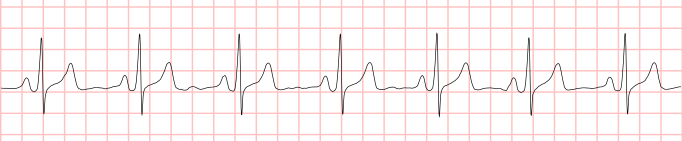
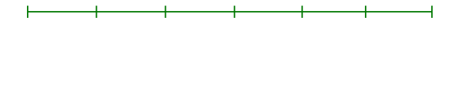
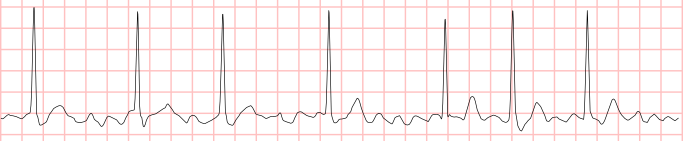
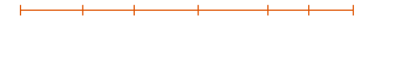
- Irregularly irregular heart rhythm.
- Absence of P waves.
- Presence of f waves.
A Bit of History...
• 2017, I was finishing my PhD thesis on ECG interpretation, when...Physionet/CinC Challenge 2017
- Short, single-lead ECG segments, classified as a whole.
- 8528 records for training, 3658 for testing.
- 4 target classes:
- Normal Sinus Rhythm.
- Atrial Fibrillation.
- Other Rhythm.
- Noise.
- More than 75 participant teams.
- Algorithms were independently evaluated.
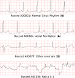
Scores of the Top-25 Approaches
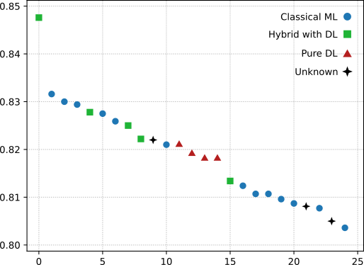
How Well does DL Reproduce Expert Knowledge?
Given a sequence of RR intervals $[RR_1, \ldots, $$_n]$ in a 30-second window, check if:
- Dataset: Public MIT-BIH Arrhythmia Database, MLII Lead
- 37 records for training, 9 for testing.
- Segments of 30 seconds duration, with different overlapping for assessing the relevance of the dataset size.
- Not so imbalanced dataset: 75% negatives, 25% positives.
- Model: State-of-the-art network achieving good performance in the Physionet Challenge.
- Requires signal abstraction (Heart beat detection)
- Requires distance calculations (RRs)
- Requires counting up to 3.
- Requires a logical "OR" operation.
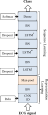
Learning Performance with Different Dataset Sizes
Training size: 6571
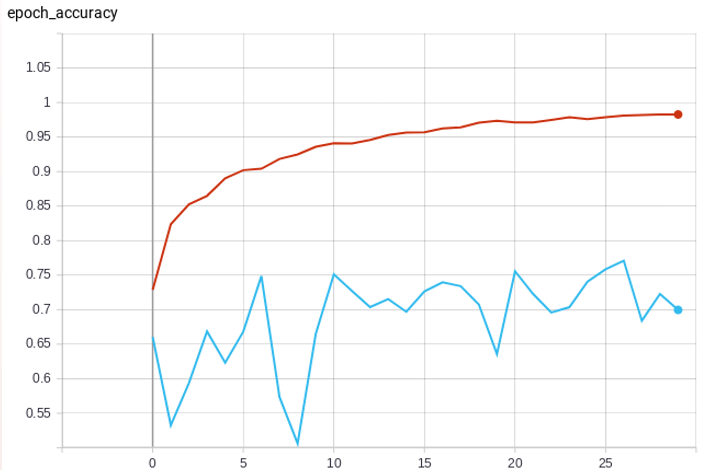
$F_1$ score = 0.397Training size: 13142
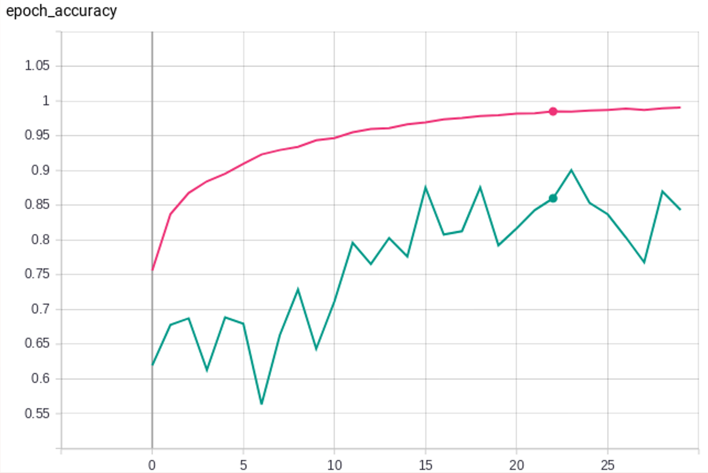
$F_1$ score = 0.709Training size: 65712
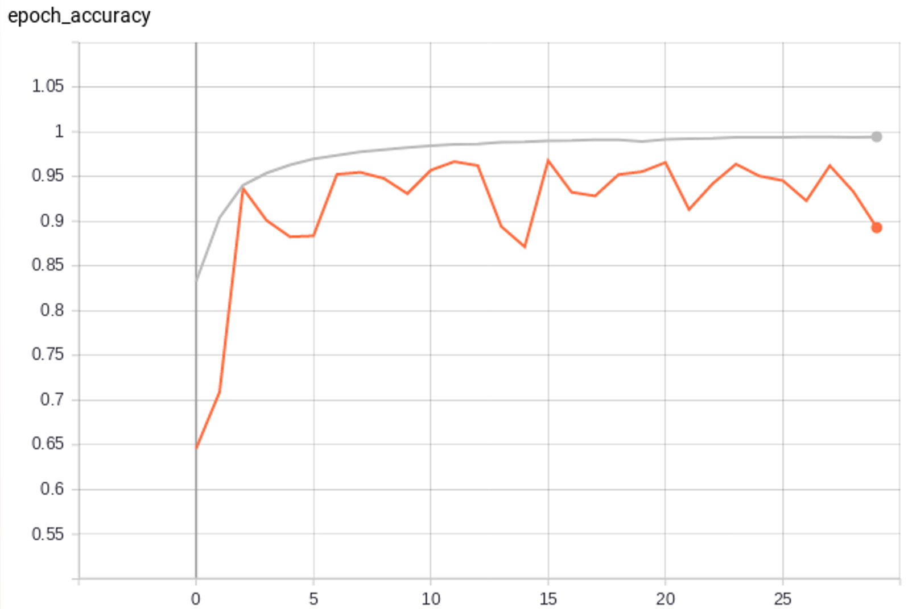
$F_1$ score = 0.808What are the Learning Difficulties?
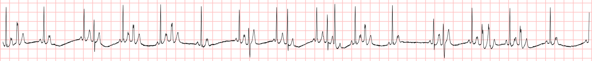
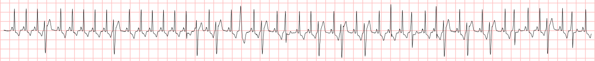
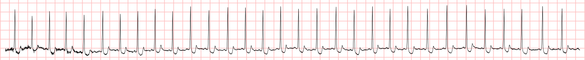
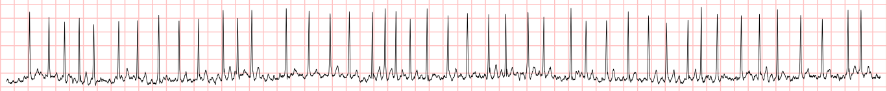
The Deception of Data
Case Study: Knee Assessment with Wearables
- Objective: To study the use of wearables for prevention and follow-up of knee musculoskeletal disorders: osteoarthritis, meniscus tears, etc.
- How: Acquiring kinematic and acoustic data of the knee joint in protocolized exercises: Flexion-extension, Sit-to-Stand, Steps.
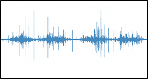
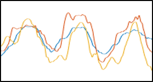
What does the Literature Say?
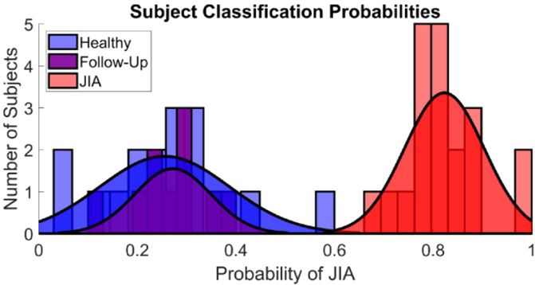
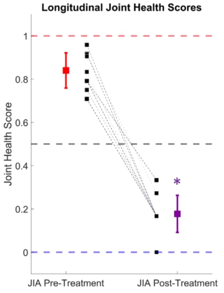
Reproducibility Challenges
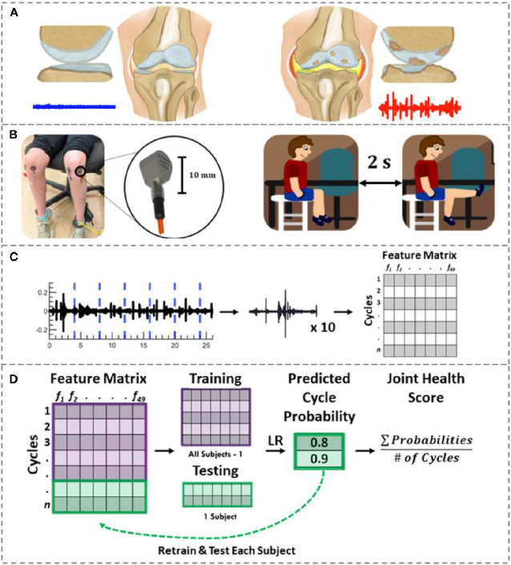
- Reported CV Accuracy: 80.6%
- Achieved CV Accuracy: 51.3%
What happens if we explore different frequency ranges for feature extraction?
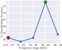
What does the Data Say?
• Finally, checking the raw data we found...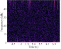
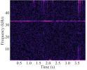
Another Study: The Magic of Transformers
Another Study: The Magic of Transformers
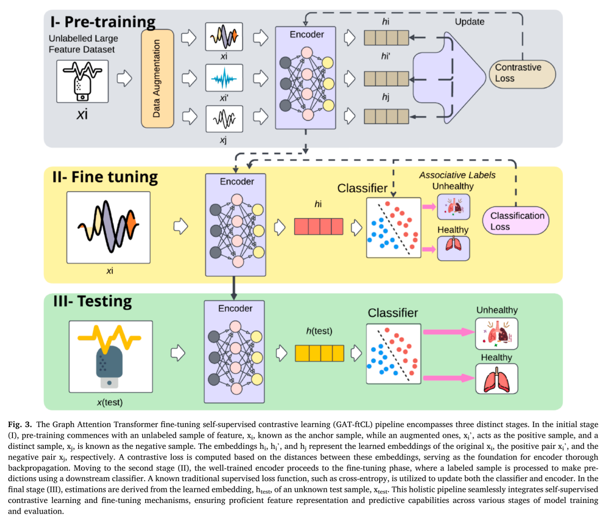
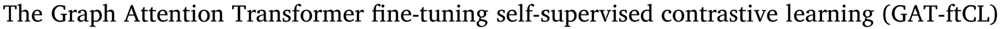
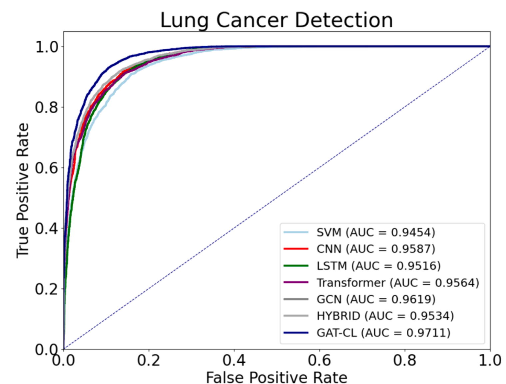
Let's Look at the Code
data = pd.read_csv('../dataset/feature_dataset.csv')
y = data['CLASSES']
X = data.drop(columns=['CLASSES', 'Segment', 'Stage', 'PAT_ID'], axis=1)
X['KURTOSIS'] = pd.to_numeric(X['KURTOSIS'], errors='coerce')
X['KURTOSIS_f'] = pd.to_numeric(X['KURTOSIS_f'], errors='coerce')
X['SKEW'] = pd.to_numeric(X['SKEW'], errors='coerce')
X['SKEW_f'] = pd.to_numeric(X['SKEW_f'], errors='coerce')
X = X.dropna()
# Split the data into training and testing sets
X_train, X_test, y_train, y_test = train_test_split(X, y, test_size=0.2)
# Create an SVC model for classification and train it
classifier_svm = SVC(kernel='rbf', C=10, gamma='scale')
classifier_svm.fit(X_train, y_train)
# Predict on the testing data using the SVM model
y_pred_svm = classifier_svm.decision_function(X_test)
fpr_svm, tpr_svm, _ = roc_curve(y_test, y_pred_svm)
roc_auc_svm = auc(fpr_svm, tpr_svm) # Result is 0.96!! 🥳
A Little Tiny Detail...
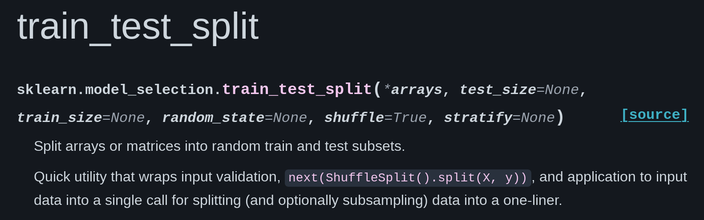
...and let's look at the data...
Segment MIN MAX MEAN ... PCA3 CLASSES PAT_ID
0 -1.317552 1.531883 0.001689 ... -2.480000e-06 1 1
1 -1.274121 1.438656 -0.001521 ... -3.240000e-06 1 1
2 -0.350645 0.551201 0.000017 ... -9.010000e-06 1 1
3 -0.636671 0.710520 -0.000052 ... -2.860000e-06 1 1
4 -0.443521 0.507641 0.000271 ... 4.290000e-06 1 1
... ... ... ... ... ... ... ... ...
49593 -0.796942 1.319245 -0.000062 ... -2.650000e-06 0 50
49594 -1.344436 1.981777 -0.000356 ... -7.420000e-07 0 50
49595 -0.346997 0.392739 0.000456 ... -2.540000e-06 0 50
49596 -0.466848 0.565417 -0.000085 ... -4.610000e-06 0 50
49597 -0.214931 0.336116 -0.000426 ... 2.250000e-06 0 50
[49598 rows x 39 columns]
- Shuffling leads to samples from the same patient being in training and test sets.
- This breaks the independence assumption of samples of every learning method!
- In the end, they are just learning to identify individuals by their voice.
One Last Example...
- In-house experiment, data collected in 5 consecutive days for a flexion-extension exercise.
- Then, 40 audio features were calculated, and a feature selection method was run to optimize a linear discriminant analysis classifier using LOOCV.
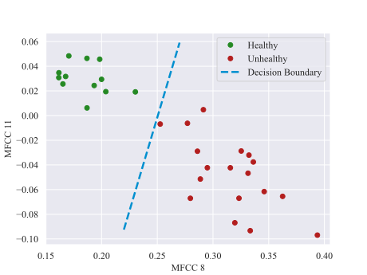
Best ClassifierConcluding Remarks
- Beware of Goodhart's law: Any metric that becomes a target ceases to be a good metric.
- Models are cheaters: Usually they don't do what you think they do, they just pretend to do it.
- If you torture the data long enough, it will confess to anything.
Most AI systems have self-deception as their main weakness.
Most AI systems haveself-deception as their mainweaknessobjective.